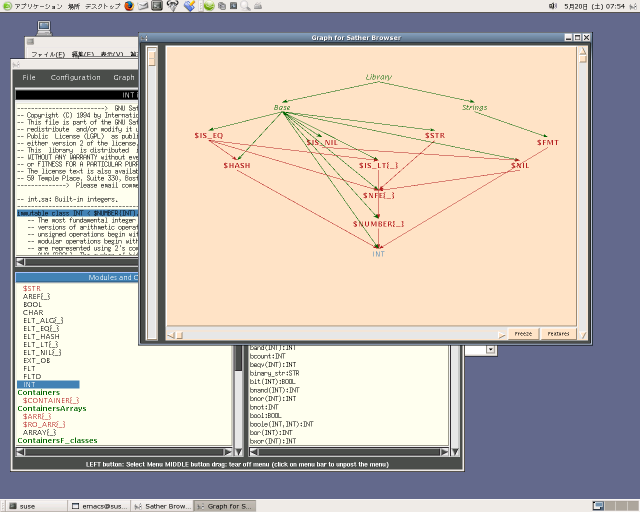

HOME
HOME Post Messages
Post Messages
|
HOME |
|
Post Messages |
01: -- a simple "Hello World" program 02: 03: class MAIN is 04: main is 05: #OUT + "Hello World!\n"; 06: end; 07: end;
;.
isis a reserved word that indicates starting the body of a class or a function definition.
end;indicates the end of a definition or a block.
#OUTis the standard output. right side of the
+operator is a values to be output. The operator
+can be chained and any kinds of object can be output if the str method is defined as shown in the following code. All the built-in classes have str method.
#OUT + "1 + 2 = " + (1+2) + "\n";
-and end with line feed if
;does not appear after
-. Usually, comments start with
--, however, to inform your editor where a comment starts.
$ sacomp hello.sa -o hello $ ./hello Hello World!You can compile several source files simultaneously by listing the files.
$ sacomp foo1.sa foo2.sa foo3.sa -o fooThe compiler name is sacomp. You can name the executable using the -o option. See Compiler Man Page about the options of sacomp. The compiler name used in the link is cs. Replace it to sacomp when you read the document.
Corresponding C source codes are produced by -output_C and -only_C options. You can compile the produced C codes for other platforms. In the case of win32+cygwin, you can make the executable by just calling make command.
The sabrowse is the Sather code browser, which shows the source and relations among classes as shown in
figures 1 and 2.
As Sather support multiple inheritance, the browser is useful to write large scale programs.
$ sabrowse hello.sa

Fig. 2. The relation among classes.
| Type | Initial Value | explanation |
|---|---|---|
| BOOL | false | boolean, true or false. |
| INT | 0 | signed integer, whose size is more than 32 bit. |
| INTI | 0i | arbitrary large integers |
| FLT | 0.0 | IEEE 754-1984 singleformat 32-bit floating point. |
| FLTD | 0.0d | IEEE 754-1984 doubleformat 64-bit floating point. |
| CHAR | '\0' | Characters |
| STR | "" | Strings |
variable name : data type; -- the reverse way from that of the C language left_hand_side := right_hand_side -- -- Example: -- b0:BOOL := true; ia:INT := 10; ib:INT := -321; ic:INT := 13_456_367_443; -- You can insert '_' for easy reading id:INT := 0b11001; -- binary, equal to 25 of decimal base ie:INT := 0o37323; -- Oct if:INT := 0x_ea_75_67; -- Hex ig:INTI := -4325i; -- an arbitrary size integer ih:INTI := 0o33784; fa:FLT := 0.0; fb:FLTD := 3.1345e-2d; ca:CHAR := 'a'; cb:CHAR := '\n'; -- newline sa:STR := "Hi";You can declare several variables simultaneously if they have same type.
a,b,c :INT; x,y,z :FLT;
-- C style
a:ARRAY{INT}:=#(10); -- int a[10];
a[0] := 100; -- a[0] = 100;
i:INT := a[1]; -- int i = a[1];
s:ARRAY{STR}:= |"foo", "bar", "baz"|; -- char* s[] = {"foo", "bar", "baz"};
s.has("foo") → true
01: -- a simple factorial program 02: 03: class MAIN is 04: main(av: ARRAY{STR}) is 05: n:INT; 06: if av.size = 2 then 07: n := av[1].cursor.get_int; 08: #OUT + fact(n) + "\n"; 09: else 10: #ERR + "Usage: fact N\n"; 11: end; 12: end; 13: 14: fact(n:INT):INT is 15: if n=0 then return 1; 16: else return n * fact(n-1); 17: end; 18: end; 19: end;Following shows the form of defining method. You should give a method name, a list of arguments, and return data type.
method_name(parm1:TYPE1, parm2:TYPE2):RETURN_TYPE is ....... ....... end;
if if_test then
if_body
elsif elsif_test then
elsif_body
else
else_body
end;
01: -- example of if: iftest 02: 03: class MAIN is 04: main(argv: ARRAY{STR}) is 05: a1, s1: STR; 06: flag : ARRAY{CHAR} := |'a', 'b', 'c'|; 07: if argv.size = 2 then 08: a1 := argv[1]; 09: if a1[0] = '-' then 10: if flag.has(a1[1]) then print_out(a1); 11: else #OUT + "This option is not supported.\n"; 12: end; 13: else show_usage; 14: end; 15: else show_usage; 16: end; 17: end; 18: 19: print_out(s:STR) is 20: #OUT + "Option " + s + " is selected.\n"; 21: end; 22: 23: show_usage is 24: #OUT + "Usage iftest -[abc]\n"; 25: end; 26: end;
$ sacomp iftest.sa -o iftest $ ./iftest -a Option -a is selected. $ ./iftest -d This option is not supported. $ ./iftest a Usage iftest -[abc].
case parameter
when values_1 then
procedure_1
when values_2 then
procedure_2
else
else_procedure
end;
01: -- example of case: casetest 02: 03: class MAIN is 04: main(argv: ARRAY{STR}) is 05: a1, s1: STR; 06: -- flag : ARRAY{CHAR} := |'a', 'b', 'c'|; 07: if argv.size = 2 then 08: a1 := argv[1]; 09: if a1[0] = '-' then 10: -- if flag.has(a1[1]) then print_out(a1); 11: case a1[1] 12: when 'a', 'b', 'c' then print_out(a1); 13: else #OUT + "This option is not supported.\n"; 14: end; 15: else show_usage; 16: end; 17: else show_usage; 18: end; 19: end; 20: 21: print_out(s:STR) is 22: #OUT + "Option " + s + " is selected.\n"; 23: end; 24: 25: show_usage is 26: #OUT + "Usage iftest -[abc]\n"; 27: end; 28: end;
Next section is about the iterators.
|
HOME |
|
Post Messages |